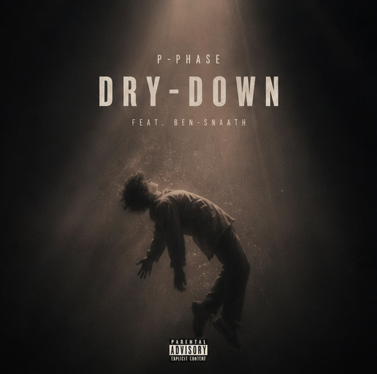

Now Playing
p-hase
Music Album
Dry Down
0:00
0:00
Ready to play
Loop Off · Shuffle Off
Total likes: 0
Tracklist
- 01
- 02
- 03
- 04
About This Player
This interface is designed as a music album player rather than a single media player. Each track is connected with its own artwork and playback state, allowing users to experience a full album listening journey.